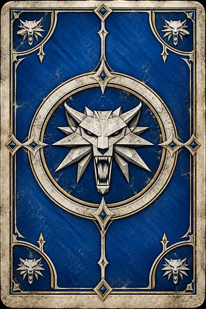

Ведьмаки
53 из 53 лицевых карт · 4 лидера · готовая рубашка
Единая основа. Иллюстрации, имена, цитаты, цифры и иконки собраны отдельными слоями. Нажмите на карту, чтобы рассмотреть её.
Игровой состав по текущим правилам: 37 отрядов, 10 особых карт, один выбранный лидер. Копии указаны под картами; это одна сущность с одним артом.
Новые реплики написаны для этого проекта — это не цитаты из игры. Новые значки расширения отмечены в отчёте. Одобрено: карты подключены к игре. Это художественная адаптация, а не подтверждённая пиксельная копия.
Лидеры
Отряды фракции
Нейтральные карты
Особые карты
Призываемые карты
Готовая рубашка использована без изменений. Общие существующие карты сохранены из предоставленного набора. Ни одна подпись способности не заменяет литературную цитату.